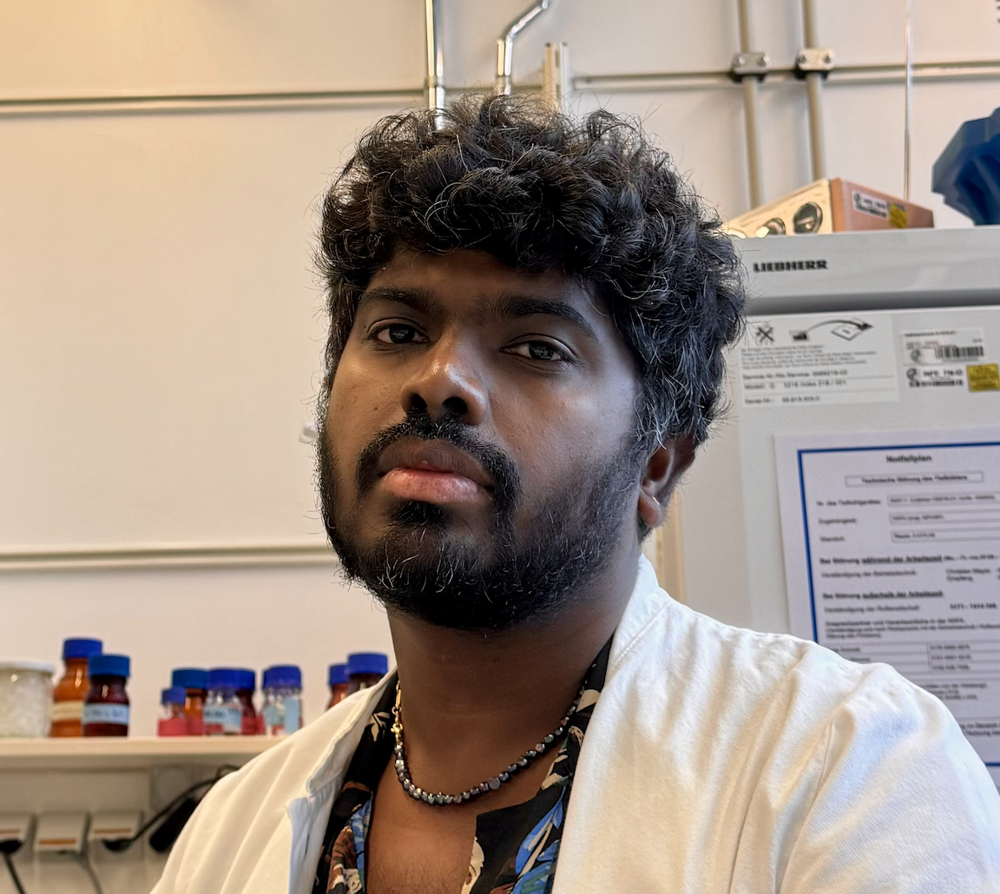

Head & Project Leader in Proteomics
Max Planck Unit for the Science of Pathogens Berlin, Germany
I am a proteomics scientist at the Max Planck Unit for the Science of Pathogens in Berlin. My research focuses on glycoproteomics, mass spectrometry technologies, and host–pathogen interactions. I develop high-throughput analytical workflows for protein characterization, post-translational modification analysis, and bioanalytical platforms supporting multidisciplinary research projects.
Developing analytical platforms for large-scale characterization of glycoproteins using LC-MS technologies.
Designing novel mass spectrometry workflows for glycan and glycopeptide analysis.
Investigating the role of glycans and post-translational modifications in microbial infection biology.
Building scalable proteomics platforms supporting interdisciplinary research across institutes.
Total citations: ~923 h-index: 15
Full publication list available in CV.
Email: alagesan@mpusp.mpg.de
ORCID: 0000-0002-7596-5558